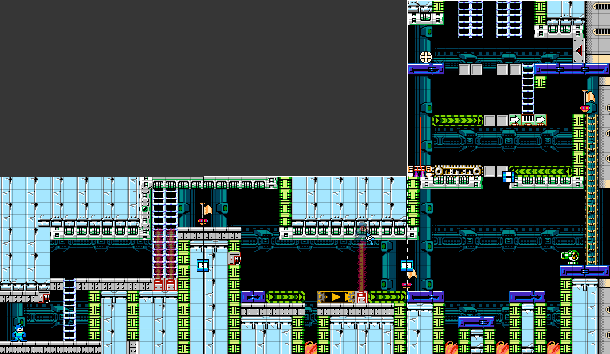
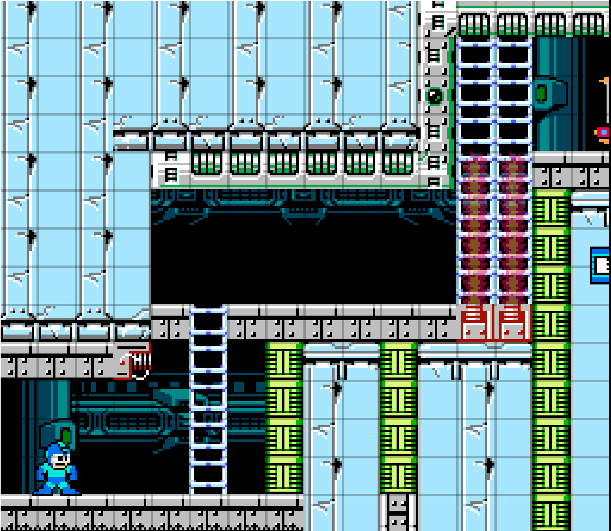
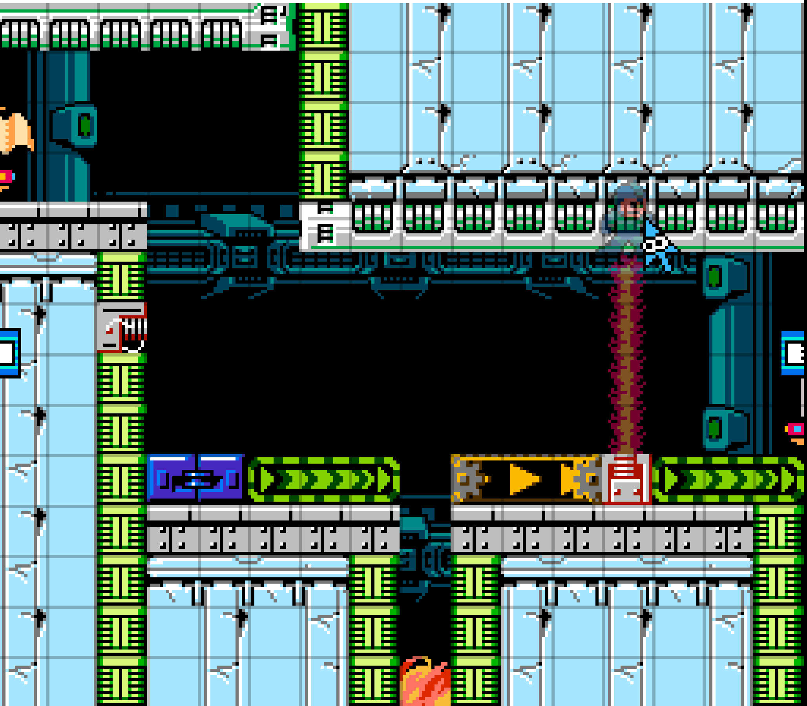
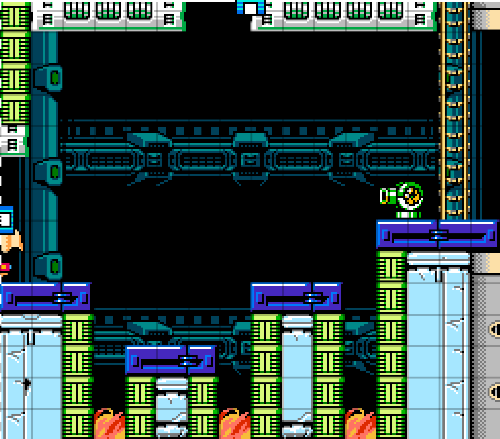
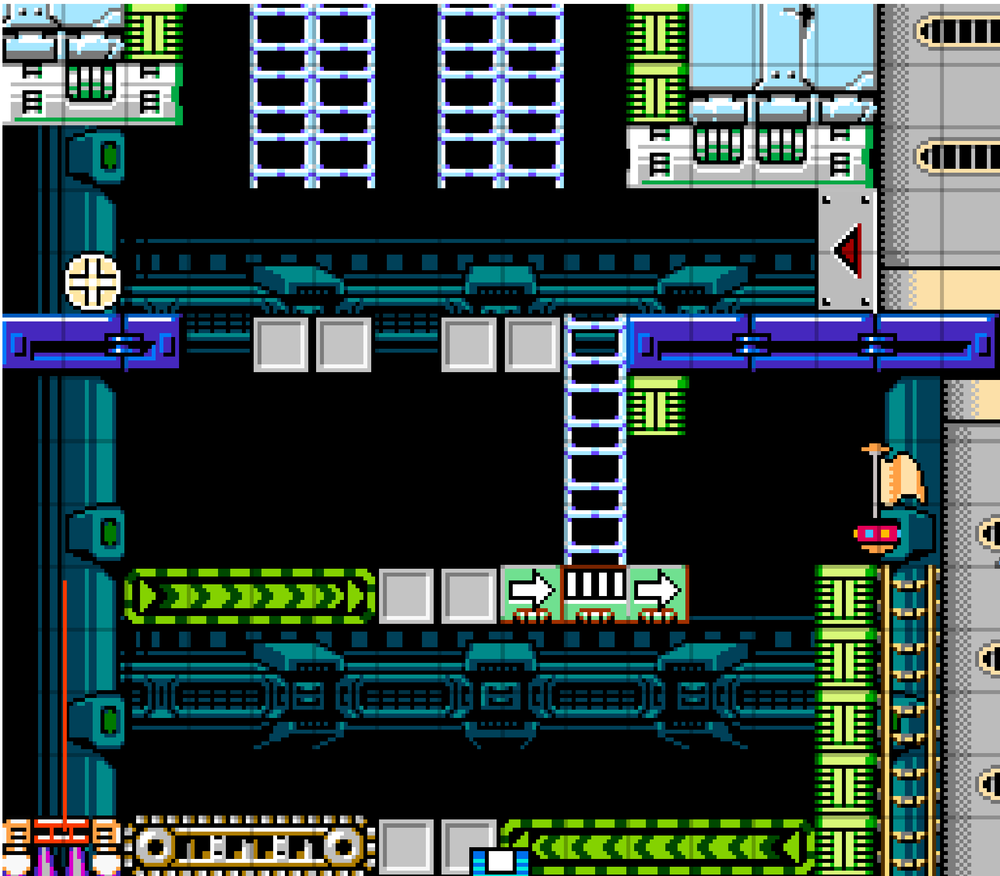

<div id="ajax-page" class="ajax-page-content">
    <div class="ajax-page-wrapper">
        <div class="ajax-page-nav">
            <div class="nav-item ajax-page-prev-next">
                <a class="ajax-page-load" href="project-wfh.html"><i class="lnr lnr-chevron-left"></i></a>
                <a class="ajax-page-load" href="project-m2.html"><i class="lnr lnr-chevron-right"></i></a>
            </div>
            <div class="nav-item ajax-page-close-button">
                <a id="ajax-page-close-button" href="#"><i class="lnr lnr-cross"></i></a>
            </div>
        </div>

        <div class="ajax-page-title">
            <h1>4-Koma</h1>
            <p class="ajax-page-subtitle">4 Koma Design | Mega Man Maker</p>
        </div>

        <div class="row">
            <div class="col-sm-8 col-md-8 portfolio-block">
                <div class="portfolio-page-video embed-responsive embed-responsive-16by9">
                    <video class="embed-responsive-item" controls preload="metadata" poster="img/portfolio/4koma/thumb.jpg">
                        <source src="media/4koma.mp4" type="video/mp4">
                    </video>
                </div>
                <p class="portfolio-page-caption portfolio-video-credit"><i class="fas fa-film"></i> Edited by Jason Teo</p>
                <div class="owl-carousel portfolio-page-carousel">
                    <div class="item">
                        <a class="lightbox" href="img/portfolio/4koma/map.png" title="Design of the Map for 4-Koma"></a>
                        <p class="portfolio-page-caption">Design of the Map for 4-Koma</p>
                    </div>
                    <div class="item">
                        <a class="lightbox" href="img/portfolio/4koma/panel-1.png" title="Level 1 of 4-Koma"></a>
                        <p class="portfolio-page-caption">Level 1 of 4-Koma</p>
                    </div>
                    <div class="item">
                        <a class="lightbox" href="img/portfolio/4koma/panel-2.png" title="Level 2 of 4-Koma"></a>
                        <p class="portfolio-page-caption">Level 2 of 4-Koma</p>
                    </div>
                    <div class="item">
                        <a class="lightbox" href="img/portfolio/4koma/panel-3.png" title="Level 3 of 4-Koma"></a>
                        <p class="portfolio-page-caption">Level 3 of 4-Koma</p>
                    </div>
                    <div class="item">
                        <a class="lightbox" href="img/portfolio/4koma/panel-4.png" title="Level 4 of 4-Koma"></a>
                        <p class="portfolio-page-caption">Level 4 of 4-Koma</p>
                    </div>
                </div>

                <script type="text/javascript">
                    jQuery(document).ready(function($){
                        $('.portfolio-page-carousel').imagesLoaded(function(){
                            $('.portfolio-page-carousel').owlCarousel({
                                smartSpeed:1200,
                                items: 1,
                                loop: false,
                                dots: true,
                                nav: true,
                                navText: false,
                                margin: 10,
                                autoHeight:true
                            });
                        });
                    });
                </script>

                <!-- About the Project -->
                <div class="project-overview">
                    <div class="block-title">
                        <h3>About the Project</h3>
                    </div>
                    <p class="text-justify">This project is done using the Open-Source software Mega Man Maker. My main goal for this design is, despite Mega Man being a game where you're meant to "Run and Gun," what if a level made environmental hazards the main focus instead?</p>
                    <p class="text-justify">Due to my lack of experience with platformers, this is one of the examples where I did not get any insight to work from, so I first went through all the blocks and items that were available to me and kept a mental note of what I had at my disposal. From there, I threw everything into a level, replicating the feeling of speed from my favourite platformer, <a href="project-celeste.html" class="ajax-page-load">Celeste</a> (Similar yet Different), and tried to identify what felt enjoyable to play. After which, I discussed with people around me regarding cadence, and that's when an insight into the level structure emerged. From there, it was a matter of tightening the player experience and how they will feel as they play the game.</p>
                </div>
            </div>

            <div class="col-sm-4 col-md-4 portfolio-block">
                <!-- Project Info -->
                <div class="project-description">
                    <div class="block-title">
                        <h3>Project Info</h3>
                    </div>
                    <ul class="project-general-info">
                        <li><p><i class="fa fa-gamepad"></i> 2D platformer, 4 levels</p></li>
                        <li><p><i class="fa fa-user"></i> Level design</p></li>
                        <li><p><i class="fa fa-cube"></i> Mega Man Maker</p></li>
                    </ul>

                    <div class="tags-block">
                        <div class="block-title">
                            <h3>Skills &amp; Tools</h3>
                        </div>
                        <ul class="tags">
                            <li><a>Mega Man Maker</a></li>
                            <li><a>Platformer Design</a></li>
                            <li><a>Cadence</a></li>
                            <li><a>Intensity Charting</a></li>
                            <li><a>Video Editing</a></li>
                        </ul>
                    </div>
                    <div class="project-links">
                        <a class="btn-primary" href="files/4Koma_JasonTeo.pdf" target="_blank" rel="noopener"><i class="far fa-file-pdf"></i> Level document (PDF)</a>
                    </div>
                </div>
                <!-- /Project Info -->
            </div>
        </div>
    </div>
</div>